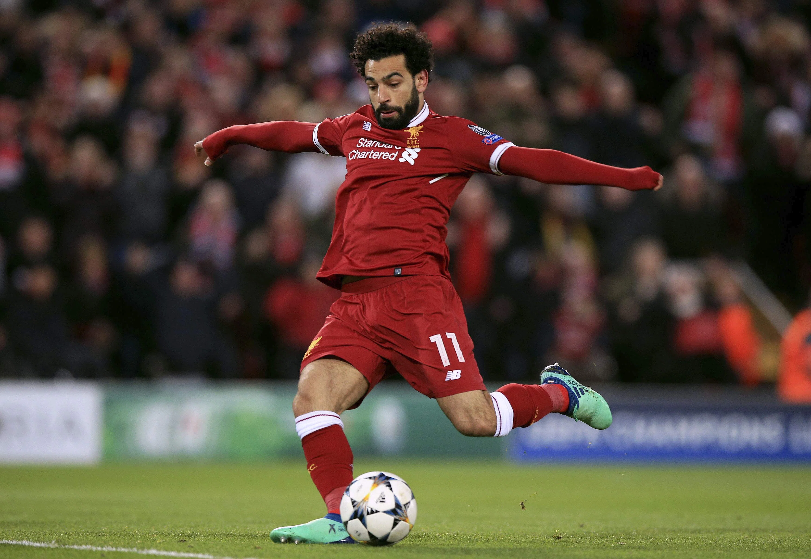

Play Style
Mohamed Salah started as a left-wing on the Egyptian team. However, once Salah kept receiving chances to score and missing, the coach saw how passionate Salah was to scoring, and put him up as a striker. Salah took this as a reason to practice even more and train in explosiveness, accuracy, strategy, and positioning. As the years passed, this training started to pay off as he became very agile, had a very delicate first touch, and outmaneuvered opponents with ease. This led to Salah racking up 25 assists in the 2021/22 season and gaining more popularity. As a result of Salah's effort in training, he was able to create opportunities for himself and his teammates, and the coach placed him near the goal.
